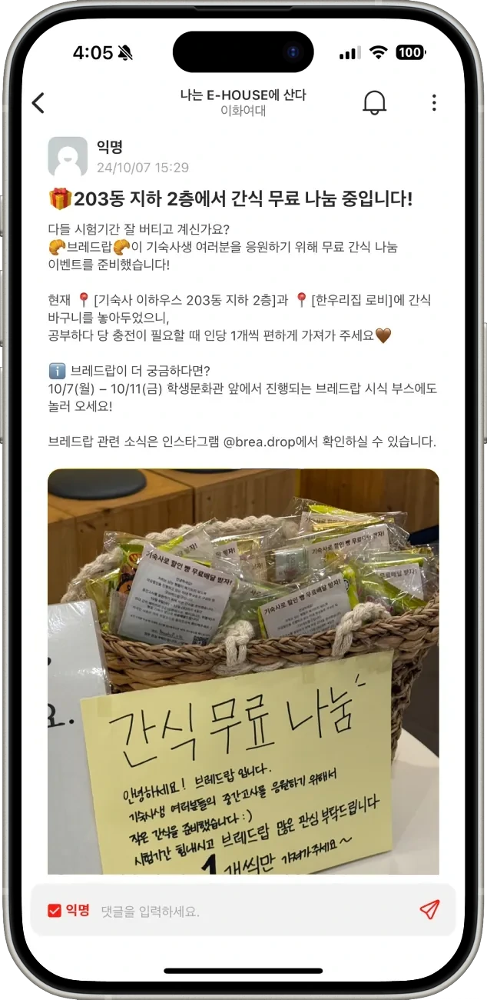
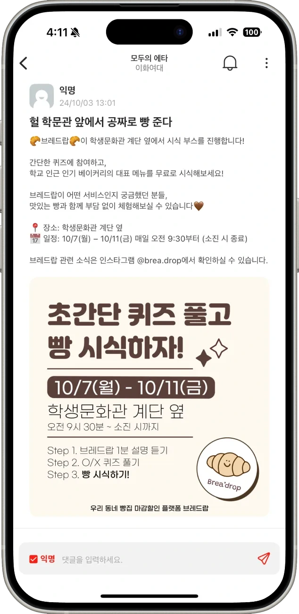

오프라인 행사,
전환율 73%를 만들다
타겟 맞춤형 오프라인 행사를 통해 고객 접점을 확보하고,
실구매 전환으로 연결한 마케팅 캠페인


문제
SNS 팔로워 증가와 구매 전환이 연결되지 않아, 실구매 타겟 접점 확보 필요성 확인
전략
맛보게주문으로
1인지기숙사 시험기간 간식 나눔
2체험캠퍼스 퀴즈 · 시식 부스
3구매오픈채팅 주문으로 연결
성과
131명주문 희망자 유입캠페인 시작 5일 만에
73%구매 전환율
Insight“오프라인 행사는 단순 홍보가 아니라, 신뢰를 만들고 구매 전환을 이끄는 트리거이다.”